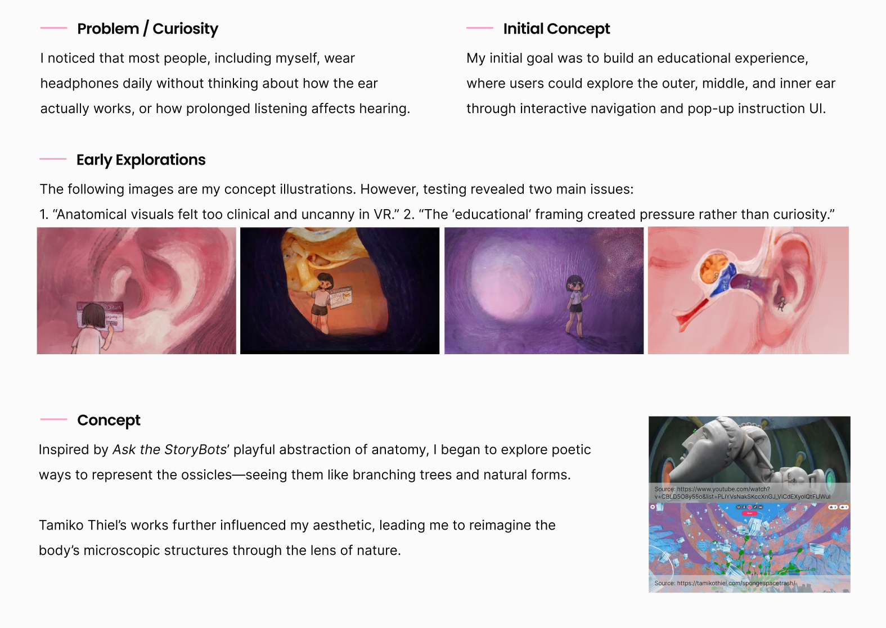
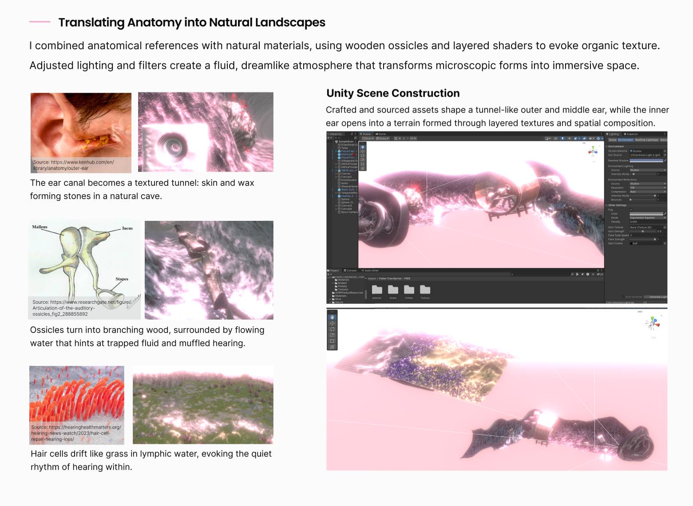
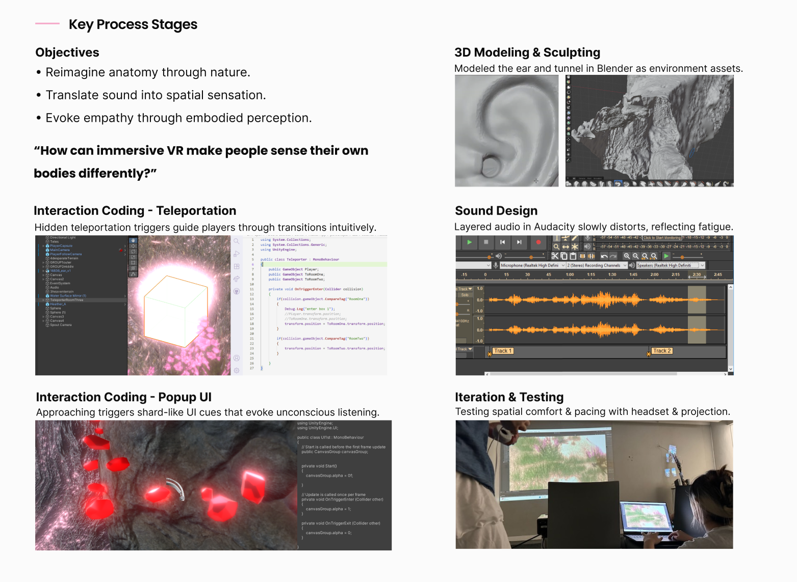
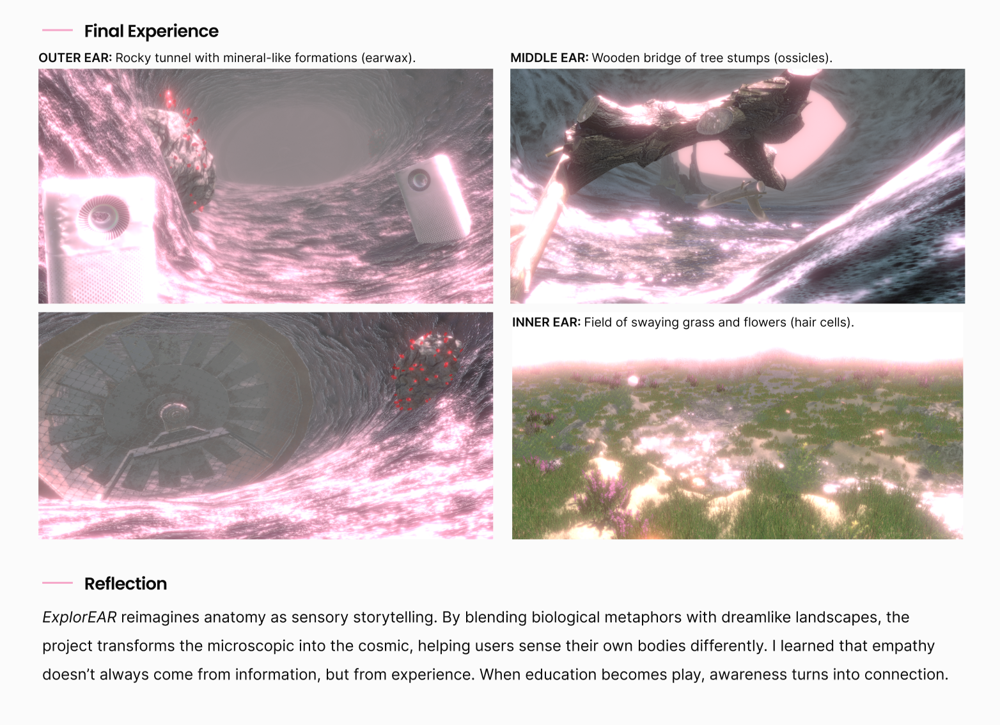

ExplorEAR
ExplorEAR reimagines anatomy as sensory storytelling. By blending biological metaphors from nature with dreamlike landscapes, the project transforms the microscopic into the cosmic, helping users sense their own bodies differently.



